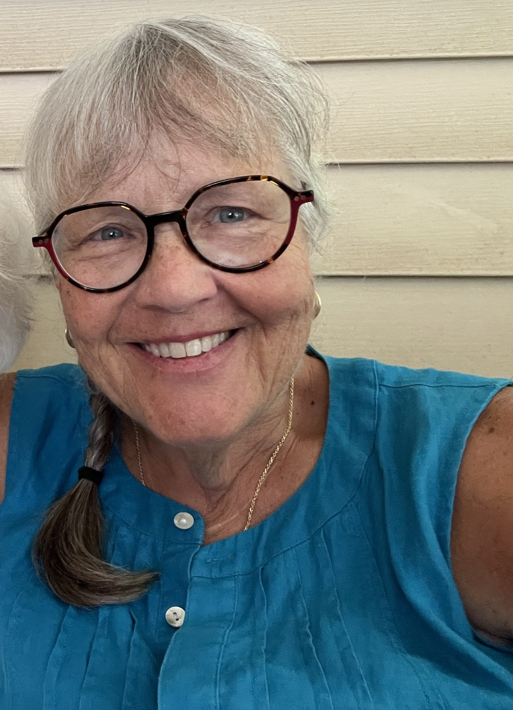
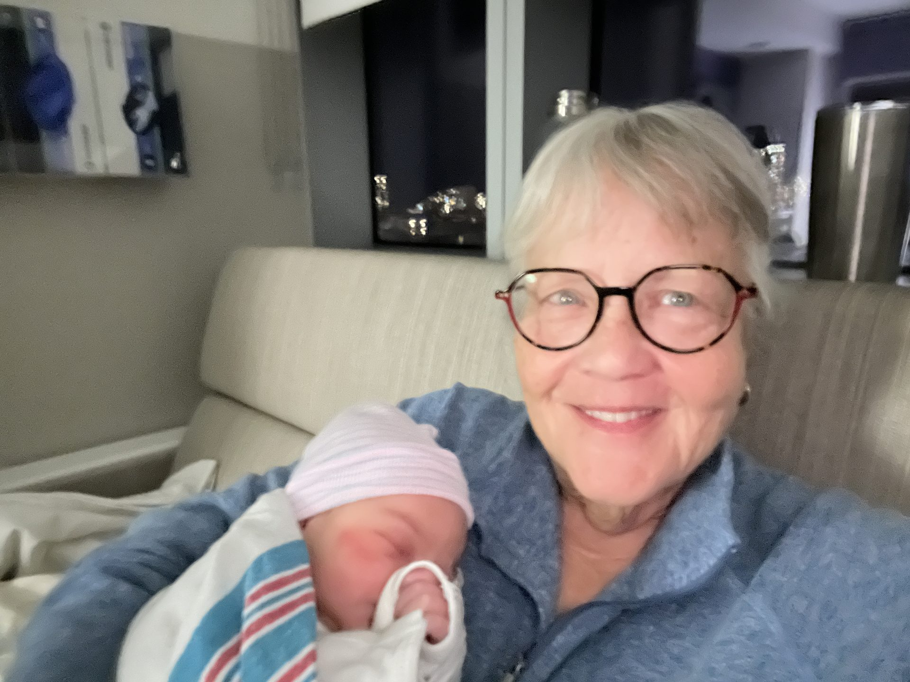

My dad's best friend is a guy named Steve. Steve has been in my life as long as I can remember — the kind of person who shows up for everything, the kind of friend my dad built his life around. Steve's partner is Pat Dodge.
Pat is a doula.

She was our doula for all three of our daughters. For Margot and Eliza, she was right there — in the room, present for the whole thing, exactly the kind of calm, grounding presence you want when things get real. For our third daughter Lorelei, Pat couldn't be in the hospital. It was COVID. The hospitals had shut down visitors, and that was that. Pat did everything she could remotely, but she wasn't able to be in the room.
That one still stings a little.
I'm telling you all of this because when Pat reached out recently about getting a website, the answer was never really a question. This was personal.
Pat has expanded her practice in a direction that most people don't expect: end-of-life midwifery.
A doula helps people through the beginning of life. An end-of-life midwife helps people through the end of it. The work is different, but the spirit is the same — presence, comfort, guidance, and being with someone at a moment that can otherwise feel isolating and frightening. Pat works with individuals and families in central Ohio who want support through a terminal diagnosis, through active dying, or through the grief that follows.
It's meaningful work. It's hard work. And almost nobody in central Ohio knows it exists.
That last part is the problem.
I sat down with Claude Code on a Saturday and we built her site from scratch. Pat had a headshot and a photo from a birth she attended — real images that tell her story without a single word of copy. We used those.
The site needed to do a few specific things well:
We built 15 FAQ questions targeting the exact phrases people type into Google when they're trying to figure out what end-of-life support even means. We listed every city Pat serves — Franklin County, Licking County, the whole metro area. We added schema markup so Google can parse the page as a structured local service. We set up a sitemap, a robots.txt, and an llms.txt for AI crawlers. Then we connected the site to Google Search Console and submitted the sitemap.
Pat's headshot shows up with the right orientation. The birth photo is quiet and real. The whole thing took about three hours.

The site is live at ohioendoflifemidwife.com.
Visit ohioendoflifemidwife.com →
This is the fourth or fifth time I've done this — built a real, professional website for someone I know who does meaningful work but doesn't have a web presence. My mom's law firm. My brother's photography. A cancer clinical trial tool for a family going through it. Now Pat.
The pattern is always the same: the person doing the work is excellent at what they do. They've been doing it for years, sometimes decades. They help real people in real moments. But they don't show up anywhere online, which means the people who need them the most can't find them.
The best person to build a website for someone isn't always a web developer. Sometimes it's someone who knows the person, knows the work, and has access to the right tools.
That's what I keep being. The person who knows the person.
I know Pat isn't just "an end-of-life midwife in Columbus." She's the woman who held space for our family through three births. She didn't make it to Lorelei's — but she showed up every other way she could. And now she's doing that same kind of showing up for families at the hardest moment of their lives.
She deserves to be found.
If you know someone in central Ohio who is facing a terminal diagnosis, or who is caring for someone who is — Pat's contact information is on the site. She's real, she's local, and she knows how to be present for the moments that matter most.
Get new posts by email
No spam. Just a note when something new goes up.